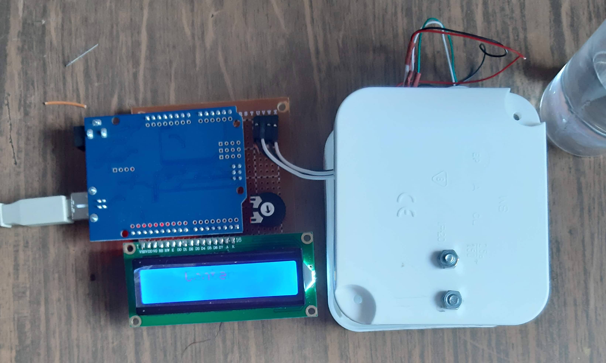

Acesta este un proiect de echipă realizat la facultate. Echipa a fost formată din trei membri. Proiectul la impresionat pe profesorul nostru pentru că am fost singura echipă care a reușit să facem un dispozitiv care să arate bine, aproape de un prototip.

Ne-am împărțit întrebuințările ca fiecare să facă ce știe mai bine. Eu am ales sa fac partea de electronică și tehnică care include alegerea componentelor, designul PCB-ului și lipirea componentelor. Un coleg a ales partea de software. Și ultimul a fost cel care a făcut designul dispozitivului și a fost și managerul proiectului.
A fost necesară să comunicare continuă pentru a construi un device stabil . Toate componentele pe care le alegeam au o specificație de la producător și colegul care făcea software-ul avea nevoie de acestea pentru a scrie un cod optimizat pentru aceste componente. Pentru colega care făcea designul dispozitivului avea nevoie să știe exact dimensiunile componentelor și a PCB-ului pentru a putea intra în carcasă și a debita o gaură pentru afișaj.
Am folosit o celulă de încărcare (Load Cell) care este un senzor pentru măsurarea greutății ce poate măsura până la 10 Kg, pentru amplificarea semnalului și conversia lui în digital de la celula de încărcare am folosit un ADC (convertor analogic-digital) HX711, pentru procesarea semnalului am folosit un Arduino UNO și pentru afișarea greutății un LCD 16x2.
Atunci când cântarul pornește are un program de inițializare care are un proces de inițializare, este necesar să pui o greutate etalon de 100g. După calibrare se afișează un mesaj de confirmare și apoi se poate utiliza.